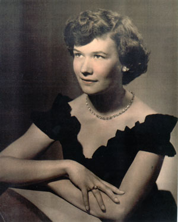

| Virginia "Ginny" Brown was born to Robert & Christina Brown on January 3rd, 1927 in Syracuse, NY. She was the second of their four children. Ginny grew up in Syracuse. She attended Marywood University, graduating in 1948. From there she began her long career as a teacher at a high school in Cazenovia, NY. |
 |
|
The Craig Family: Ginny, Bob, Cindy, Joel, and Tim. |
Ginny met Bob Craig and they where married in St. John the Evangelist Church in Syracuse on June 30, 1951. They moved a lot, making homes in Albany, NY, Rochester, NY, Linwood, NJ, Silver Spring, MD, Rockville, MD, and finally Mount Airy, MD, where she still resides today. Together they had three children (see photo at left). As soon as the children were old enough, Ginny went back to teaching. Her husband Bob died in 1981, followed by her son Joel in 1985. |
| Ginny has done an immense amount of genealogical work not only on her own family, but the Craigs as well. Most of the pictures presented here for this part of the family are courtesy of her. When she finally retired, Ginny had taught for a total of 30 years at every grade level. She enjoys spending time with her family, especially the Kings, who live nearby in Frederick. It has grown to include 5 grandkids and 4 great-grandkids |
Ginny as she's known by her grandkids and great-grandkids. |